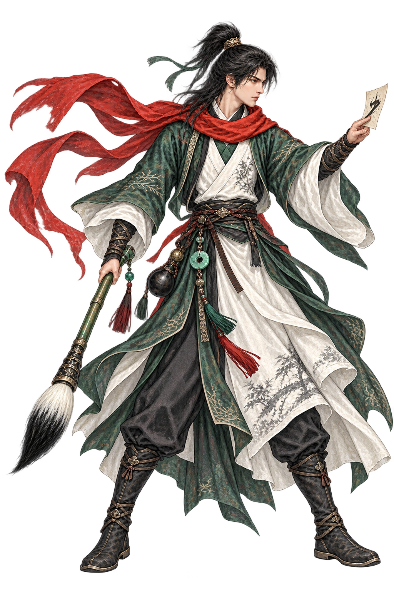
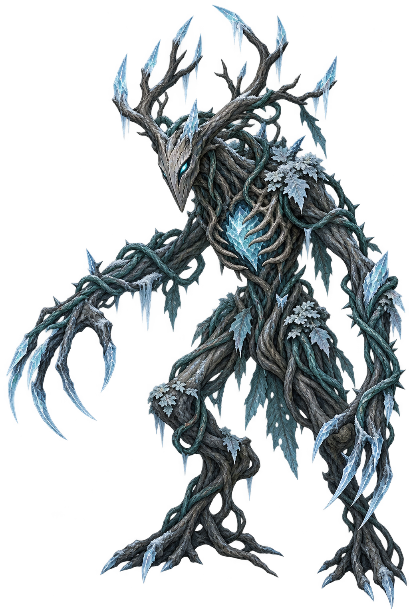

字
汉字成圣九层试炼 · 字义成术
赠予初行者 · 预设十张字卡
开局只有刀与盾。前往奇遇论诗、答题或亲笔制卡，获得新的字，再尝试组合术式。
一字一势 · 一念成式


字印 · 凝式
牌册与构筑
每回合3文气、抽5张，手牌上限10。结束回合弃牌；标记「保留」的牌留在手中。格挡用于当轮反击，只有守势与术式能保留部分剩余格挡。蓄势最多9，战斗结束清空；消耗牌本战不再洗回。
奇遇手册
人物对话是游戏架空创作，挽词为原创选项；小说角色以彩蛋身份出现。每局不重复遇见同一事件。
术式图鉴 · 组合与进阶
普通牌留下字印，同一张实体牌每回合只留一次；最多3枚，新印替换最早的印。凝式消耗字印，牌本身仍按正常效果结算。每回合至多凝式／进阶2次、释放1次。术式可保留到下一回合结束，进阶继承原期限。